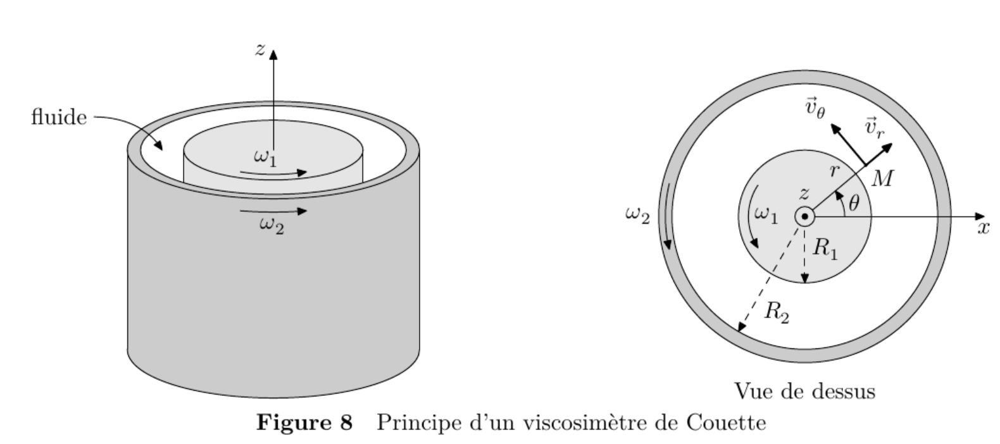

PrepOral
[PC] [Centrale]
Viscosimètre de couette
Enoncé
Le viscosimètre de Couette permet de mesurer la valeur de la viscosité $\eta$ d’un fluide. Un fluide est introduit entre deux cylindres coaxiaux d’axe $(Oz)$ et de longueur $L$. Le cylindre intérieur est de rayon $R_1$ et est entraîné à la vitesse angulaire $\omega_1$, alors que le cylindre extérieur est de rayon $R_2$ et est entraîné à la vitesse angulaire $\omega_2$. Les cylindres sont suffisamment longs dans la direction $(Oz)$ pour négliger les effets de bord et pour qu’il n’y ait pas de composante axiale $v_z$ de la vitesse $\vec{v}$ du fluide. En un point $M$ du fluide on se place en régime stationnaire et en coordonnées cylindriques $(r,\theta,z)$.

On rappelle l'expression de la divergence dans ces coordonées :
\[
\mathrm{div}\,\vec{v}
=
\frac{1}{r}\frac{\partial (r v_r)}{\partial r}
+
\frac{1}{r}\frac{\partial v_\theta}{\partial \theta}
+
\frac{\partial v_z}{\partial z}
\]
1. Le fluide est supposé incompressible, montrer que la composante radiale $v_r$ de la vitesse
$\vec{v}$ est nulle.
Pour la suite, on admet que la norme de la vitesse $v$ du fluide peut s’écrire
\[
v = \left( Ar + \frac{B}{r} \right)
\]
2. Déterminer les expressions de $A$ et $B$ en fonction de $R_1$, $R_2$, $\omega_1$ et $\omega_2$.
Dans la pratique, on prend comme conditions expérimentales $\omega_1 = 0$ et $R_2 - R_1 \ll R_1$, ce qui permet
d’assimiler localement l’espace entre les deux cylindres à l’espace entre deux plans.
3. Par analogie avec la force de cisaillement entre deux plans, montrer que l’expression de la force
élémentaire $\vec{dF}$ de cisaillement s’exerçant sur une surface $\mathrm{d}S$ du cylindre intérieur s’écrit
\[
\vec{dF} = 2\eta A \,\mathrm{d}S\, \vec{u}_\theta.
\]
4. Calculer le moment total $\Gamma$ exercé par les forces de cisaillement sur le cylindre intérieur
suivant l’axe $(Oz)$.
5. Comment mesurer alors la viscosité $\eta$ ?
Commentaires
Encore jamais posé !
Corrigé
1. On utilise $div(\vec{v})=0$ : $$ \frac{\partial (rv_r)}{\partial r}=0 $$ Or la vitesse en $R_1$ et $R_2$ est orthoradiale (CL), donc $v_r=0$.
2. Les CL donnent : $v(R_1)=R_1\omega_1$ (idem pour 2). D'où : $$A=\frac{R_2^2\omega_2-R_1^2\omega_1}{R_2^2-R_1^2} \quad B=\frac{R_1^2R_2^2(\omega_1-\omega_2)}{R_2^2-R_1^2}$$ 3. Par analogie : $$\vec{dF}=\eta \frac{\partial v_{\theta}}{\partial r}(r=R_1) dS \vec{e_{\theta}}$$ 4. $$ \Gamma = 4 \pi \eta L \frac{R_1^2R_2^2}{R_2^2-R_1^2}\omega_2$$ 5. Le cylindre intérieur reste fixe il faut donc lui appliquer un couple $-\Gamma \propto \eta$.